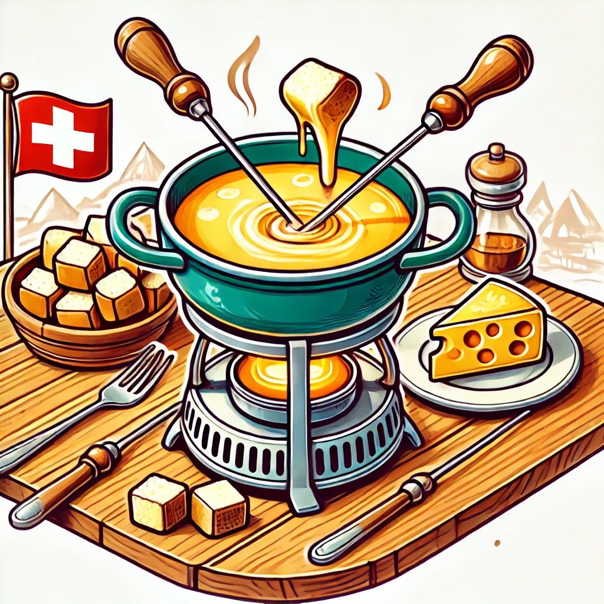

<!DOCTYPE html>
<html lang="en">

<head>
  <meta charset="utf-8" />
  <meta name="viewport" content="width=device-width, initial-scale=1.0, maximum-scale=1.0, user-scalable=no" />

  <title>Game Theory & Economics Basics</title>
  <link rel="icon" href="./../../assets/favicon.svg" />
  <link rel="shortcut icon" href="./../../assets/favicon.png" />
  <link rel="stylesheet" href="./../../dist/reset.css" />
  <link rel="stylesheet" href="./../../dist/reveal.css" />
  <link rel="stylesheet" href="./../.././assets/styles/PBA-theme.css" id="theme" />
  <link rel="stylesheet" href="./../../css/highlight/shades-of-purple.css" />

  <link rel="stylesheet" href="./../.././assets/styles/custom-classes.css" />

</head>

<body class="site">
  <header class="site-header">
    <!-- This logo is a link only on the watching server, not the production build -->
    <a href="">
      
    </a>
  </header>
  <main class="reveal">
    <article class="slides">
      <section  data-markdown><script type="text/template">

# Economics Basics

## Please Fill out the Survey:

<br/>
</script></section><section  data-markdown><script type="text/template">
<pba-cols>
<pba-col class="fragment">
<pba-flex center>

#### Cryptography

- Primarily about Computers
- impossibility guarantees

</pba-flex>
</pba-col>
<pba-col class="fragment">
<pba-flex center>

#### Economics

- Predict actions of people
- focus on incentives

</pba-flex>
</pba-col>
</pba-cols>

<p class="fragment">
🤖$~~~$ 🤝 $~~~$👪
</p>

<aside class="notes"><ul>
<li>Cryptography would be meaningless without humans using it.</li>
<li>Crypto &amp; Econ pair well! Together they are the toolbox to design unstoppable systems.</li>
<li>They have a great symphony: where cryptography&#39;s has boundaries, economics offers solutions and vice versa.</li>
<li>Example from crypto module: Commit-reveal scheme is cryptographically secure. But how can we make sure entities reveal if it is to their disadvantage?</li>
</ul>
</aside></script></section><section  data-markdown><script type="text/template">
<pba-cols>
<pba-col class="fragment">
<pba-flex center>

#### Macroeconomics

- Large Systems
- Economic Growth
- Supply & Demand

</pba-flex>
</pba-col>
<pba-col class="fragment">
<pba-flex center>

#### Microeconomics

- Focus on Individual Actors
  (companies or people)
- Key Mathematical Tool: Game Theory

</pba-flex>
</pba-col class="fragment">
</pba-cols>
</script></section><section  data-markdown><script type="text/template">
## Game Theory: What is a "Game"?

Abstract, Simplified model of ...

- Set of rational Actors ("Participants", "Players")
- Sets of Possible Actions taken by Players
- Preferences for outcomes

<aside class="notes"><ul>
<li>Abstract Modelling Pros &amp; Cons:<ul>
<li>simple, easy to analyze, can help understand, compare ,...</li>
<li>models vs reality: interactions outside of model, unexpected preferences</li>
</ul>
</li>
</ul>
</aside></script></section><section  data-markdown><script type="text/template">
## Types of games

<ul>
<li class="fragment">static & dynamic games</li>
<li class="fragment">complete & incomplete information games</li>
</ul>
</script></section><section  data-markdown><script type="text/template">
## Types of games

<table><tbody>
  <tr>
    <td></td>
    <td>Static</td>
    <td>Dynamic</td>
  </tr>
  <tr>
    <td>Complete Information</td>
    <td class="fragment">Rock, Paper, Scissors</td>
    <td class="fragment">Chess</td>
  </tr>
  <tr>
    <td>Incomplete Information</td>
    <td class="fragment">Sealed-Bid Auctions</td>
    <td class="fragment">Poker</td>
  </tr>
</tbody>
</table>
</script></section><section  data-markdown><script type="text/template">
### Three firms want to hire an engineer...

<pba-cols>
<pba-col>

- The engineer brings added value to each firm of 300,000 USD per year.
- The payoff of the firm is known by everyone to be 300,000 USD minus the salary.
- The payoff to the engineer is salary minus cost of working, which is known to everyone.
- All firms make a salary offer at the same time.

</pba-col>
<pba-col>

### Quiz Questions:

1.  Is this game static or dynamic?
    What would need to change in the description of the game such that it would fall in the other category?
1.  Is this game of complete or incomplete information?
    What would need to change in the description of the game such that it would fall in the other category?

</pba-col>
</pba-cols>

<aside class="notes"><ol>
<li><p>The game is static.
For it to be dynamic, firms would need to make offers sequentially, <em>knowing what the firms before had offered</em>.</p>
</li>
<li><p>The game is of complete information.
To make information incomplete, we would need to have that the value of hiring the engineer differs between firms and is unknown between firms.
Or that the cost of working for the engineer is not known to the firms.
The point is that we need to have uncertainty over payoffs.</p>
</li>
</ol>
<ul>
<li>This lesson focuses on static games of complete information.</li>
<li>When we look at auctions in lesson Price finding mechanisms, we will also consider games of incomplete information, both dynamic and static.</li>
</ul>
</aside></script></section><section  data-markdown><script type="text/template">
## Analyzing Static Games

<ul>
    <li class="fragment">Easy Case: <em>Dominant Strategies</em></li>
    <li class="fragment">"dominant": optimal no matter what the other players do</li>
</ul>
</script></section><section  data-markdown><script type="text/template">
## Example: Prisoners Dilemma

Bonnie and Clyde are accused of robbing two banks:

<ul>
<li class="fragment">First Robbery: Overwhelming evidence, guaranteed conviction</li>
<li class="fragment">Second Robbery: Insufficient Evidence, conviction only if at least one of the two admits it.</li>
</ul>
</script></section><section  data-markdown><script type="text/template">
## Example: Prisoners Dilemma

The Prosecutors offer a deal:

<ul>
<li class="fragment">Usually: 2 years for every proven bank robbery</li>
<li class="fragment">However: If you admit the second robbery and your partner doesn't ...</li>
<li class="fragment"> ... then you get 1 year and the partner gets 5 years</li>
<li class="fragment">If both admit it both get 4 years</li>
</ul>

<aside class="notes"><ul>
<li>They are interrogated in different rooms, apart from each other.</li>
</ul>
</aside></script></section><section  data-markdown><script type="text/template">
## Example: Prisoners Dilemma

Bonnie and Clyde have two options:

- $C$: **Cooperate** with each other and say nothing
- $D$: **Defect** and admit their crime

<style type="text/css">
.tg  {border-collapse:collapse;border-spacing:0;margin:0px auto;}
.tg td{border-color:black;border-style:solid;border-width:1px;font-family:Arial, sans-serif;font-size:14px;
  overflow:hidden;padding:10px 5px;word-break:normal;}
.tg th{border-color:black;border-style:solid;border-width:1px;font-family:Arial, sans-serif;font-size:14px;
  font-weight:normal;overflow:hidden;padding:10px 5px;word-break:normal;}
.tg .tg-ttf9{border-color:#000000;font-size:42px;text-align:center;vertical-align:middle}
</style>
<table class="tg fragment"><tbody>
  <tr>
    <td class="tg-ttf9" colspan="2" rowspan="2"></td>
    <td class="tg-ttf9" colspan="2">Clyde</td>
  </tr>
  <tr>
    <td class="tg-ttf9">C</td>
    <td class="tg-ttf9">D</td>
  </tr>
  <tr>
    <td class="tg-ttf9" rowspan="2">Bonnie</td>
    <td class="tg-ttf9">C</td>
    <td class="tg-ttf9">(2,2)</td>
    <td class="tg-ttf9">(5,1)</td>
  </tr>
  <tr>
    <td class="tg-ttf9">D</td>
    <td class="tg-ttf9">(1,5)</td>
    <td class="tg-ttf9">(4,4)</td>
  </tr>
</tbody>
</table>

<ul>
    <li class="fragment">Defecting is a dominant strategy</li>
    <li class="fragment"> ... but $(C, C)$ is "better"?</li>
</ul>
</script></section><section  data-markdown><script type="text/template">
## Prisoners' Dilemma IRL

<ul>
<li class="fragment"><strong>Nuclear Arms Race:</strong> NATO and Russia prefer no arms race to an arms race. Yet, having some arms is preferable to having no arms, irrespective of whether the other one is armed.
</li>
<li class="fragment"><strong>OPEC:</strong> Limiting oil supply is in the best interest of all. However, given the high price that thus results, everyone has an incentive to increase individual oil supply to maximize profits.</li>
<li class="fragment"><strong>Tax Havens:</strong> All Nations want to have enough Tax Income, but ... </li>
<li class="fragment"><strong>Tragedy of the Commons:</strong> Pollution, Overfishing, etc</li>
<li class="fragment"><strong>Collaboration vs Freeriding:</strong> e.g. Deserting Soldiers</li>
</ul>

<aside class="notes"><p>OPEC: Organization of the Petroleum Exporting Countries.
It is something like a cartel that agree on limiting the global oil production and keep the oil price artificially high.</p>
<p>OPEC and Cartels generally seems to overcome the Prisoners&#39; Dilemma...
More on that later.</p>
</aside></script></section><section  data-markdown><script type="text/template">
## Analyzing Static Games

- Easy Case: Dominant Strategies
- Harder Case: What if there are no Dominant Strategies?
</script></section><section  data-markdown><script type="text/template">
## Example: The Travelers' Dilemma

<div class="fragment">
<ul>
    <li> A group of travelers had an amazing trip to Switzerland. </li>
    <li> They wanted to share a piece of its culture with their friends and family. </li>
    <li> To do so, each traveler purchased a fondue set for CHF 50.- as a souvenir. </li>
</ul>

<br/>

</div>
</script></section><section  data-markdown><script type="text/template">
## The Travelers' Dilemma

<ul>
    <li class="fragment"> When landing back home, the travelers have discovered that the airline has lost all of the fondue sets. </li>
    <li class="fragment"> Fortunately, the airline is offering compensations ranging from CHF 2.- to CHF 100.-. </li>
    <li class="fragment"> Since none of the travelers has a receipt, the airline asks the travelers to independently declare the price of the lost fondue set (between 2 and 100). </li>
</ul>
</script></section><section  data-markdown><script type="text/template">
## The Travelers' Dilemma

<ul>
    <li> If all travelers declare the same price $p$:
        <ul>
            <li> Then $p$ must be the truth.  </li>
            <li> Hence, each traveler receives $p$ CHF. </li>
        </ul>
    </li>
    <li style="margin-top:50px;" class="fragment"> Otherwise, if $p$ is the lowest price declared:
        <ul>
            <li> If a traveler has declared $p$, they receive $p + 2$ CHF. </li>
            <li> Otherwise, they receive $p - 2$ CHF.
        </ul> 
    </li>
    <li style="margin-top:50px;" class="fragment">  What would you declare? </li>
</ul>
</script></section><section  data-markdown><script type="text/template">
## The Travelers' Dilemma


<!-- https://forms.gle/UoCGdzU5VxKbjfV27 -->
</script></section><section  data-markdown><script type="text/template">
## The Travelers' Dilemma: Discussion

<ul>
    <li> 
        Is declaring <i>a high value</i> a good strategy?
        <ul> <li class="fragment"> No: it is best to be the traveler who wrote the lowest price. </li> </ul>
    </li>
    <li class="fragment"> Is declaring <i>2</i> a good strategy? 
        <ul> <li class="fragment"> Yes. </li> </ul>
    </li>
    <li class="fragment">All travelers declaring a price of CHF 2.- is a <strong>Nash Equilibrium</strong></li>
</ul>
</script></section><section  data-markdown><script type="text/template">
## Nash-Equilibrium

<ul>
<li class="fragment">A set of strategies (one for each player) is a NE if every players strategy is optimal given the strategies of all other players</li>
<li class="fragment">Equiv.: Nobody can gain anything from being the first to deviate</li>
<li class="fragment">Every dominant strategy equilibrium is also a NE</li>
</ul>
</script></section><section  data-markdown><script type="text/template">
## Example: Coordination Game

<ul>
    <li>Alice and Bob want to have dinner together. Should they choose the French or the Indian restaurant?</li>
    <li class="fragment">Alice prefers French food, Bob prefers Indian food</li>
    <li class="fragment">... but if they choose different restaurants they will be alone and sad</li>
</ul>

<style type="text/css">
.tg  {border-collapse:collapse;border-spacing:0;margin:0px auto;}
.tg td{border-color:black;border-style:solid;border-width:1px;font-family:Arial, sans-serif;font-size:14px;
  overflow:hidden;padding:10px 5px;word-break:normal;}
.tg th{border-color:black;border-style:solid;border-width:1px;font-family:Arial, sans-serif;font-size:14px;
  font-weight:normal;overflow:hidden;padding:10px 5px;word-break:normal;}
.tg .tg-dij8{border-color:#000000;font-size:42px;text-align:center;vertical-align:middle}
</style>
<table class="tg fragment"><tbody>
  <tr>
    <td class="tg-dij8" colspan="2" rowspan="2"></td>
    <td class="tg-dij8" colspan="2">Bob</td>
  </tr>
  <tr>
    <td class="tg-dij8">F</td>
    <td class="tg-dij8">I</td>
  </tr>
  <tr>
    <td class="tg-dij8" rowspan="2">Alice</td>
    <td class="tg-dij8">F</td>
    <td class="tg-dij8">(2,1)</td>
    <td class="tg-dij8">(0,0)</td>
  </tr>
  <tr>
    <td class="tg-dij8">I</td>
    <td class="tg-dij8">(0,0)</td>
    <td class="tg-dij8">(1,2)</td>
  </tr>
</tbody>
</table>
</script></section><section  data-markdown><script type="text/template">
## Coordination Games IRL:

<ul>
    <li class="fragment">Technical Standards (File Formats, Power Plugs, Messenger Apps)</li> 
    <li class="fragment">Languages, Terminology</li>
    <li class="fragment">Traffic Laws
    <div class="fragment" style="text-align:center;">
    <br/>
        <p style="display:inline-block;">Sweden, 1967.</p>
    </div></li> 
</ul>

<aside class="notes"><p>Gas bei Gelb vs bei grün sofort los</p>
</aside></script></section><section  data-markdown><script type="text/template">
## Exercise: Nash Demand Game

<ul>
    <li class="fragment">Alice and Bob find a CHF 10.- note</li>
    <li class="fragment">Both can say how much of it they want to have</li>
    <li class="fragment">If the sum of their demands exceeds CHF 10.-, they get nothing</li>
    <li class="fragment">Otherwise, they receive as much as they demanded</li>
    <li class="fragment">Is there a Nash Equilibrium?</li>
</ul>
</script></section><section  data-markdown><script type="text/template">
## Schelling Points

- Social Norm / Expectation which indicates a preferred equilibrium.

- Used for Coordination without Communication

- Examples:
    <ul>
        <li class="fragment">Nash Demand Game: Even Split</li>
        <li class="fragment">Restaurant Choice: Alternate, Coin Toss</li>
    </ul>

<aside class="notes"><p>UMFRAGE</p>
</aside></script></section><section  data-markdown><script type="text/template">
## Exercise: Voting Game

Switzerland is holding a vote on an Initiative. Assume that ...

<ul>
    <li class="fragment">75% of citizens oppose it, 25% support it</li>
    <li class="fragment">People are Lazy: If someones vote doesn't change the result, they'd rather not vote at all</li> 
</ul>

<p class="fragment">Questions:</p>
<ul>
    <li class="fragment">Are there Nash Equilibria? What are they?</li>
    <li class="fragment">Does a NE occur in reality? Why? / Why not?</li> 
</ul>
</script></section><section  data-markdown><script type="text/template">
## Analyzing Static Games

<ul>
    <li class="fragment">Easy Case: Dominant Strategies (Prisoner's Dilemma)</li>
    <li class="fragment">Harder Case: Nash Equilibria, Schelling Points</li>
    <li class="fragment">Even Harder Case: What if there is no Nash Equilibrium?</li>
</ul>
</script></section><section  data-markdown><script type="text/template">
## Example: Dollar Auction

Consider a sealed-bid, all-pay auction for a bank note worth CHF 100.

<ul>
    <li class="fragment">all-pay auction: you pay your bid even if you lose</li>
    <li class="fragment">Why is there no Nash Equilibrium?
        <ul>
            <li class="fragment">If nobody bids anything ... </li>
            <li class="fragment">If somebody bids and loses ...</li>
            <li class="fragment">If only one person bids anything ...</li>
        </ul>
</ul>
</script></section><section  data-markdown><script type="text/template">
## Example: Rock, Paper, Scissors

<aside class="notes"><p>und jetzt Pause?</p>
</aside></script></section><section  data-markdown><script type="text/template">
## Solution: Randomized Strategies

Two equivalent perspectives:

<ul> 
    <li class="fragment">Players are fixed and choose their actions at random</li>
    <li class="fragment">Players are drawn at random, but have fixed actions</li> 
</ul>

<aside class="notes"><p>explain with RPS</p>
</aside></script></section><section  data-markdown><script type="text/template">
## Solution: Randomized Strategies

- Fact: Every Game is has a randomized NE ...
- ... If we assume that:
  - Players have finitely many options
  - Players want to maximize their _Expected Utility_
</script></section><section  data-markdown><script type="text/template">
## Expected Utility

<ul>
    <li class="fragment">Expectation: Average, weighted by Probability</li>
    <li class="fragment">Utility: "happyness score" which each Player assigns to outcomes</li>
    <li class="fragment">Examples of Utility functions:
        <ul>
            <li class="fragment">Rock, Paper Scissors: U(Win) = +1, U(Draw) = 0, U(Lose) = -1</li>
            <li class="fragment">Prisoners Dilemma: U(N years jail time) = -N</li>
            <li class="fragment">Nash Demand Game: U(get X CHF) = X</li>
        </ul>
    </li>
</li>

<aside class="notes"><p>go through prev. examples and show utility functions</p>
</aside></script></section><section  data-markdown><script type="text/template">
<section>

## Utility vs Money

<ul>
    <li>
    Would you pay CHF 50.- for a 50% chance of getting CHF 100.-? 
    <ul>
        <li class="fragment">Hell No: Risk Averse</li>
        <li class="fragment">... eh: Risk Neutral</li>
        <li class="fragment">Hell Yes: Risk Seeking</li>
    </ul>
    </li>
    <li class="fragment">What should U(-50), U(0), U(+50) be in each of these cases?</li>
</ul>
</section>
<section>

## Utility: Philosophical Question

<ul>
    <li class="fragment">Can we compare $U_{\text{Alice}}$ to $U_{\text{Bob}}$?
    <ul>
        <li class="fragment">No!</li>
        <li class="fragment">... but some try anyway (e.g. QALYs)</li>
    </ul>
    </li>
</ul>
</section></script></section><section  data-markdown><script type="text/template"><section>

## Survey Responses:

> Recall: If actors want to maximize expected utility, </br>
> then a randomized NE is guaranteed to exist

Were you maximizing your expected Utility?

</section>

<section>
    <h2>Addendum: Allais Paradox</h2>
    <ul>
        <li class="fragment">People often choose (A) in the first question and (B) in the second question</li>
        <li class="fragment">This is incompatible with maximizing expected Utility!</li>
        <ul>
            <li class="fragment">
                $\phantom{0.1\cdot U_{10}2 + }U_2\phantom{ + 0.9\cdot U_0 }> 0.1\cdot U_{10} + 0.89\cdot U_2 + 0.01\cdot U_0$
            </li>
            <li class="fragment">
                $0.1\cdot U_{10}\phantom{ + U_2 }+ 0.9\cdot U_0 >\phantom{ 0.1\cdot U_{10}2 +}0.11\cdot U_2 + 0.89\cdot U_0$
            </li>
        </ul>
        </li>
</section>

<section>
    <h2>Addendum: vNM Utility Theorem</h2>
    <ul> 
        <li class="fragment">Given some "reasonable" preferences about randomized outcomes ... </li>
        <li class="fragment"> ... it is always possible to find utility function</li>
        <li class="fragment">"reasonable" means ...
            <ul>
                <li class="fragment">Continuity: If $A > B > C$, then $(1-p)A + pC \simeq B$ for some $p$</li>
                <li class="fragment">Independence: $A > B$ if and only if $pA + (1-p)C > pB + (1-p)C$</li>
        </li>
    </ul>        
</section>
</script></section><section  data-markdown><script type="text/template">
## NE in Rock, Paper, Scissors

<ul>
    <li class="fragment">If one player picks R, P, S with $1/3$ chance each ... </li>
    <li class="fragment">... then Win, Draw, Loss are all equally likely</li>
    <li class="fragment">Therefore: Both players doing this is a Nash Equilibrium</li>
</ul>
</script></section><section  data-markdown><script type="text/template">
## NE in Dollar Auction

> Sealed-bid, all-pay auction for a bank note worth CHF 100.- <br/> (Participants: Alice and Bob)

<ul>
    <li class="fragment">Alice chooses a uniformly random bid.</li>
    <li class="fragment">If Bob bids CHF X, Bob has a ... 
    <ul>
        <li class="fragment">... X% chance to earn CHF (100 - X)</li>
        <li class="fragment">... (100 - X)% chance to lose CHF X</li>
        <li class="fragment">Independently of X, expected profit is 0</li>
    </ul>
    </li>
</ul>
</script></section><section  data-markdown><script type="text/template">
# Workshop: Games

<aside class="notes"><ul>
<li>45-60 minutes</li>
</ul>
</aside></script></section><section  data-markdown><script type="text/template">
## Game 1: Ultimatum Game

<ul>
    <li> The proposer decides how to split 100 points between themselves and the responder.</li>
    <li> The responder can either accept or reject the offer.</li>
    <li class="fragment">If the responder accepts, the points are split as proposed. If they reject, both receive 0 points.</li>
</ul></script></section><section  data-markdown><script type="text/template">
## Game 1: Ultimatum game

- You are randomly matched with another student in the classroom.
- The interaction is anonymous.
- Player 1 gets an endowment of 100 points.
- Player 1 can offer Player 2 between 0 and 100 points.
- Player 2 sees the offer and can decide to accept or reject the offer.
- If the offer is accepted, the endowment is split according to the offer.
- If the offer is rejected, both get 0 points.
- There is no right or wrong here.
  It is your choice how to behave in this context!
</script></section><section  data-markdown><script type="text/template">
<!-- .slide: data-background-color="#4A2439" -->

# Game 1: Questions?

## Don't ask about strategies!
</script></section><section  data-markdown><script type="text/template">
## Let's start!

Link will be distributed!
</script></section><section  data-markdown><script type="text/template">
## Game 1: Discussion

<ul> <li> What were your strategies here? </li>

 <li class="fragment">The proposer has the following considerations:
    <ul>
        <li class="fragment">What would the responder accept?</li>
        <li class="fragment">Answer: every payoff (larger than 0).</li>
        <li class="fragment">Therefore, I should offer, since I want to maximize my payout, something equal or slightly higher than 0.</li>
    </ul>
    </li>
    <li class="fragment">That means, the proposer offering something small and the responder always accepting is the only NE.</li>
</ul>
</script></section><section  data-markdown><script type="text/template">
## Game 2: Multi-Round Ultimatum Game

<ul>
    <li> We play the ultimatum game again, but this time over 5 rounds. </li>
    <li class="fragment"> In each round, the proposer may make an offer, and the responder may accept or reject. </li>
    <li class="fragment"> Once the responder accepts, the game is over and the payoff is split accordingly. </li>
    <li class="fragment"> If round 5 ends without the responder accepting, both players get 0 points. </li>
</ul>
</script></section><section  data-markdown><script type="text/template">
# Game 2: Questions?

## Don't ask about strategies!
</script></section><section  data-markdown><script type="text/template">
## Let's start!

Link will be distributed!
</script></section><section  data-markdown><script type="text/template">
# Game 2: Discussion

## What strategies did you use?
</script></section><section  data-markdown><script type="text/template">
# Game 3: Multi-Round Ultimatum Game, again!

<ul>
    <li class="fragment"> But this time, the number of rounds is <span style="font-weight:bold;">unknown</span>. </li>
    <li class="fragment"> If the last round ends without the responder accepting, both players get 0 points. </li>
    <li class="fragment"> Let's start! </li>
</ul>
</script></section><section  data-markdown><script type="text/template">
# Game 3: Discussion

## How did your strategy change?
</script></section><section  data-markdown><script type="text/template">
## Game 4: Prisoner's Dilemma

- You play a Prisoner's Dilemma (groups of 2) over 10 rounds.
- You can chat between rounds.

|           |             | **_The other participant_** |                        |
| --------- | ----------- | --------------------------- | ---------------------- |
|           |             | _Cooperate_                 | _Defect_               |
| **_You_** | _Cooperate_ | 200 points, 200 points      | 0 points, 300 points   |
|           | _Defect_    | 300 points, 0 points        | 100 points, 100 points |
</script></section><section  data-markdown><script type="text/template">
<!-- .slide: data-background-color="#4A2439" -->

## Game 4: Questions?

### Don't ask about strategies!
</script></section><section  data-markdown><script type="text/template">
## Game 4: Let's go!

Link will be distributed!
</script></section><section  data-markdown><script type="text/template">
## Game 4: Discussion

<ul>
    <li class="fragment">Prof. Robert Axelrod held a tournament in the 1980s to find out which computer program ("strategy") would perform best against others.</li>
    <li class="fragment">In the first tournament, 14 strategies were submitted by leading Game Theorists and others in the field.</li>
    <li class="fragment">The game would be repeated 200 times.</li>
    <li class="fragment">Each strategy would play against every other strategy and against itself.</li>
</ul>

<aside class="notes"><ul>
<li>Based on ve42 dot co/Axelrod1980a and youtube dot com/watch?v=mScpHTIi-kM</li>
</ul>
</aside></script></section><section  data-markdown><script type="text/template">
## Game 4: Discussion

<ul>
    Some famous strategies were:
    <li class="fragment">Being sneaky: Cooperate but smuggle in some defections.</li>
    <li class="fragment">Grim trigger: Always cooperate but retaliate and defect forever, if the other defect once.</li>
    <li class="fragment">Tit-For-Tat: Start with cooperate and copy the opponent's strategy of the last round.</li>
</ul>
</script></section><section  data-markdown><script type="text/template">
## Game 4: Discussion

<ul>
    <li class="fragment">Tit-for-Tat was the best-performing strategy.</li>
    <li class="fragment">Prof. Axelrod was able to deduce four main aspects of well-performing strategies:
        <ul>
            <li class="fragment">First: Be nice (do not defect first).</li>
            <li class="fragment">Second: Be forgiving (retaliate but do not hold a grudge).</li>
            <li class="fragment">Third: Be retaliatory (strike back).</li>
            <li class="fragment">Fourth: Be clear (signal a simple strategy so the other knows who they are playing against).</li>
        </ul>
    </li>
</ul>

<aside class="notes"><ul>
<li>This was rather big surprise, especially since dominant strategy is being nasty.</li>
<li>A lot of it is what we can observe in today&#39;s politics.</li>
</ul>
</aside></script></section><section  data-markdown><script type="text/template">
## Game 4: Discussion

<ul>
    <li class="fragment">There is no single best strategy.</li>
    <li class="fragment">It always depends on who you are playing against.</li>
    <li class="fragment">Simulations in a later study show that a cluster of tit-for-tat players within a defecting population can grow and overtake defecting types.</li>
</ul>
</script></section><section  data-markdown><script type="text/template">
## Summary

- The basics of game theoretic concepts.
- Different types of games.
- How games can be modeled.
- How to apply game theoretic thinking in our decision making in certain games.
</script></section><section  data-markdown><script type="text/template">
<!-- .slide: data-background-color="#4A2439" -->

# Questions
</script></section><section  data-markdown><script type="text/template"></script></section>
    </article>
  </main>

  <script src="./../../dist/reveal.js"></script>

  <script src="./../../plugin/markdown/markdown.js"></script>
  <script src="./../../plugin/highlight/highlight.js"></script>
  <script src="./../../plugin/zoom/zoom.js"></script>
  <script src="./../../plugin/notes/notes.js"></script>
  <script src="./../../plugin/math/math.js"></script>

  <script src="./../../assets/plugin/mermaid.js"></script>
  <script src="./../../assets/plugin/mermaid-theme.js"></script>

  <script src="./../../assets/plugin/chart/chart.js"></script>
  <script src="./../../assets/plugin/chart/chart.min.js"></script>

  <script src="./../../assets/plugin/tailwindcss.min.js"></script>

  <script>
    function extend() {
      var target = {};
      for (var i = 0; i < arguments.length; i++) {
        var source = arguments[i];
        for (var key in source) {
          if (source.hasOwnProperty(key)) {
            target[key] = source[key];
          }
        }
      }
      return target;
    }

    // default options to init reveal.js
    var defaultOptions = {
      controls: true,
      progress: true,
      history: true,
      center: true,
      transition: 'default', // none/fade/slide/convex/concave/zoom
      slideNumber: true,
      mermaid: {
        startOnLoad: false,
        logLevel: 3,
        theme: 'base',
        themeVariables: {
          primaryColor: purple,
          primaryTextColor: white,
          primaryBorderColor: pink,
          lineColor: pink,
          secondaryColor: lightPurple,
          tertiaryColor: lightPurple,
        },
      },
      chart: {
        defaults: {
          color: 'lightgray', // color of labels
          scale: {
            beginAtZero: true,
            ticks: { stepSize: 1 },
            grid: { color: "lightgray" }, // color of grid lines
          },
        },
        line: { borderColor: ["#ccc", "#E6007A", "#6D3AEE"], "borderDash": [[5, 10], [0, 0]] },
        bar: { backgroundColor: ["#ccc", "#E6007A", "#6D3AEE"] },
      },
      plugins: [
        RevealMarkdown,
        RevealHighlight,
        RevealZoom,
        RevealNotes,
        RevealMath,
        RevealMermaid,
        RevealChart
      ]
    };

    // options from URL query string
    var queryOptions = Reveal().getQueryHash() || {};

    var options = extend(defaultOptions, {"width":1400,"height":900,"margin":0,"minScale":0.2,"maxScale":2,"transition":"none","controls":true,"progress":true,"center":true,"slideNumber":true,"backgroundTransition":"fade"}, queryOptions);
  </script>


  <script>
    Reveal.initialize(options);
  </script>
</body>

</html>
